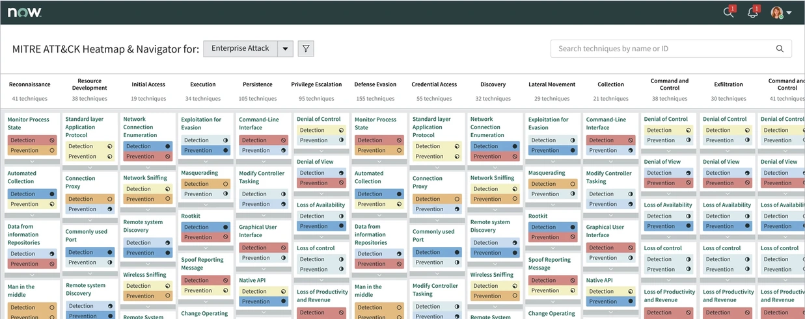
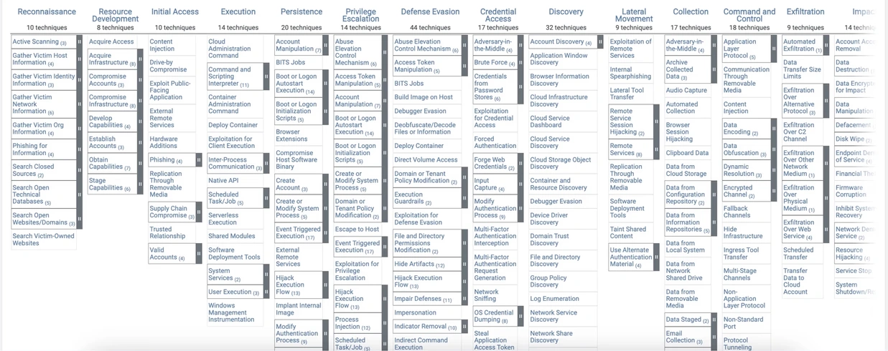
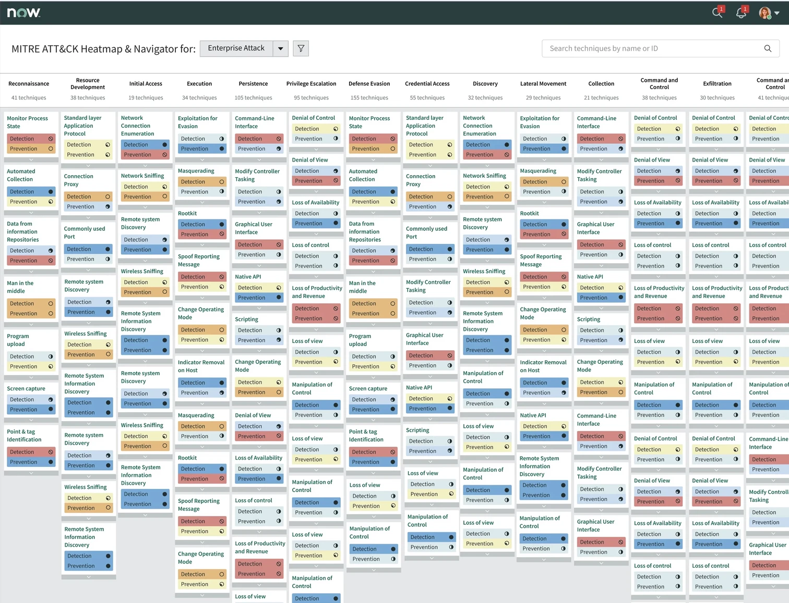

Rebuilding the MITRE ATT&CK heat map inside ServiceNow.
The heat map that shows a security team which attacks it can catch. Same matrix, easier to read.


BeforeAfter1 Tech lead
4 Engineers
Threat intelligence teams
Interaction design
Usability & accessibility
I moved the MITRE ATT&CK matrix into ServiceNow, and made it easier to read.
The MITRE ATT&CK heat map shows a security team which attacks it can catch, and which it cannot. My ticket asked me to rebuild it inside ServiceNow without changing how it worked.
A direct copy would have kept the old problems. The view was hard to read, hard to move through, and not built on the ServiceNow design system. So I proposed three extra goals: consistent components, better readability, and accessibility. The matrix itself did not change.
What changed after release
-
~70%
Faster threat detection and incident response.
-
Adopted by Cisco and DNB Bank.
Later used by other Fortune 500 security teams.
-
1
Place to view coverage and act on it, instead of switching to external references.
What the matrix is, and why it was hard to use.
MITRE ATT&CK is a public list of the ways attackers work. It has three levels: tactics (what the attacker wants), techniques (how they do it) and sub-techniques (the exact variations). Security teams use it for two tasks: to learn how an attack works, and to check their own defences against each behaviour.
Both are reading tasks. In the old view, both were slow.
Three problems made the old view hard to use
-
Not on the design system.
The visualisation used custom components, so it was hard to update and did not match the rest of the security products.
-
Hard to scan.
The layout was dense and text heavy, with long scrolling, inconsistent formatting and too many clicks to reach details.
-
Coverage had only three levels.
Cells were red, yellow or green. A team that was making progress on a technique had no way to show it.
I could guess at what was slow, or I could go and watch someone use it.
Talking to analystsThe first users were ServiceNow’s own security team.
ServiceNow has its own security team, so my first users sat in the same company. I met them to hear where the current tool failed, and we reviewed the standard ATT&CK experience together with product and engineering.
The feedback repeated one point: finding and reading techniques and coverage was the main pain, and it slowed down every analysis.
hard to scan
hard to navigate
not accessible
Explore attack techniques
Analysts read tactics, techniques and sub-techniques, often several at once, to understand one threat.
Check security coverage
Teams mark what they can defend on the matrix and look for the gaps.
Every screen in the redesign had to serve one of these two jobs. If it served neither, it did not ship.
Three design decisions shaped the redesign.
The finished navigator at the top of this page looks simple. These are the three decisions behind it, including the versions we tried and rejected.
Rebuild the technique card on the design system
Job 1 lives in one component: the technique card. How it opens, what it shows, where sub-techniques sit. Iteration one changed the card from opening sideways to opening vertically, on ServiceNow components. Before showing anyone, we wrote down what was wrong with it ourselves.
- Vertical opening: the open and close behaviour of the card makes it easier to move through a long list.
- ServiceNow components: the UI matches the rest of the security workflow.
- Weak separator between tactics: when a category runs long, you lose track of where it ends.
- Colour contrast fails: the background and cell colours did not pass the accessibility check. A darker background fixes it.
Replace three colours with a 0 to 100 scale
Coverage means: how well can a team detect or prevent each behaviour in the matrix. The original tool leaves the values to each team, and most teams used three colours: red, yellow, green. Three levels cannot show progress.
We replaced them with a 0 to 100 scale in six bands. A team can now show it is halfway there, instead of only pass or fail.
| Coverage | % | Representation | Meaning |
|---|---|---|---|
| Excellent | 81–100% | Coverage is comprehensive and effective | |
| Very good | 61–80% | Strong, but may have some minor gaps | |
| Good | 41–60% | Requires supplemental detection or prevention | |
| Fair | 21–40% | Partial coverage, with notable gaps | |
| Poor | 1–20% | Very limited coverage | |
| None | 0% | No coverage at all |
Not chosenThe meters read as a progress bar, which coverage is not. And the meaning lived in colour alone.
- A colour order that runs logically from excellent to none
- A clean UI that stays readable despite many data points
- Dot meters look like a linear progress indicator, which this is not
- Some colours, blue, purple and teal, are too similar
- Detection and Prevention dots are too small to tell apart quickly
- Colour-only encoding is not accessible to colourblind users
- No fast way to scan for the techniques with missing coverage
Give every colour a symbol
The last two problems on that list had one cause: the design depended on colour alone. The fix: every band gets a symbol as well as a colour. The reading works without colour vision, and the empty symbol makes missing coverage easy to find.
Accessibility should have been a rule from iteration one, not a finding in iteration two. I had checked colour contrast on the background, but not on the data itself. Since this project, every encoding I design must work in greyscale first.
ShippedThis is the version that went out. Every item on the critique list is answered by the symbol.
Standard Layer Application Protocol
Active Scanning
Domain Accounts
Final designs
The same matrix, the same names, the same data, now in one place with a clearer layout. Five decisions are marked on it.

1 click the pins. each one is a decision
Every state a technique cell can be in, documented once, so engineering could build it once:
What the numbers say after release
-
~70%
Faster threat detection and incident response.
-
Adopted by Cisco and DNB Bank.
Later used by other Fortune 500 security teams.
-
Fewer external references.
Analysts stayed in the platform instead of opening external tools.
Security is not binary, it is incremental.
The heat map helped us show progress, not just a pass or fail.
Security analyst · internal team at ServiceNow
Companies using ServiceNow Security Operations report the difference in their own numbers:
“We’re a digital-first airline. Cybersecurity is foundational for our business.”
Thomas Widen · Head of cybersecurity and compliance, SAS- Under 1 minute to identify a threat
- Under 10 minutes to contain it
- Under 1 hour to analyse future risk
“ServiceNow ITOM and Security Operations provide visibility of global IT asset management statuses, and automate security breach prevention from serious threats.”
Tetsuo Shiozaki · Deputy head of digital strategy, Yokogawa- 35K global IT assets visible
- 30% efficiency gain by prioritising incidents
- 1 minute from threat detection to response, from 1 to 3 weeks previously
From ServiceNow customer stories.
What this project taught me
-
Keep the standard, change the reading.
ATT&CK gave every security team a shared vocabulary. We kept its structure and names untouched, and changed only how people read them. That is what made the redesign safe to approve.
-
Frame design work in engineering terms.
Better usability did not win the approval. Lower maintenance cost did. The same work, argued as an engineering saving.
-
Show absence, not just presence.
A heat map shows what you have. Analysts needed to see what was missing, so the empty cells had to be the most visible thing on screen.
Check greyscale first.
The symbol-and-colour system is the right answer. I would have reached it a sprint earlier if accessibility had been a rule from the start.
“This redesign transforms MITRE ATT&CK from a static reference tool into a dynamic, adaptable experience that helps security professionals act with speed and clarity.”